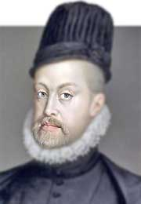

Felipe II gobernó España durante el apogeo de su poder, tanto cultural como político. De su padre, heredó el gobierno de España, la mayoría de las islas del Caribe, Florida, México y Sudamérica,
excepto Brasil. En 1565, España puso las Filipinas directamente bajo su control y abrió una ruta comercial transpacífica, lo que facilitó significativamente el comercio con Asia. En 1580, cuando
se convirtió en rey de Portugal, Felipe II añadió el gobierno de Brasil y otros territorios coloniales de Portugal a su dominio. El comercio en el Nuevo Mundo y Asia financió el mecenazgo cultural
de Felipe y las guerras en Europa. Un firme defensor del catolicismo, las guerras de Felipe II contra el protestantismo fueron costosas y dieron lugar a la Leyenda Negra , una visión negativa de España
y Felipe II como crueles e intolerantes.
Felipe II gobernó España durante el apogeo de su poder, tanto cultural como político. De su padre, heredó el gobierno de España, la mayoría de las islas del Caribe, Florida, México y Sudamérica,
excepto Brasil. En 1565, España puso las Filipinas directamente bajo su control y abrió una ruta comercial transpacífica, lo que facilitó significativamente el comercio con Asia. En 1580, cuando
se convirtió en rey de Portugal, Felipe II añadió el gobierno de Brasil y otros territorios coloniales de Portugal a su dominio. El comercio en el Nuevo Mundo y Asia financió el mecenazgo cultural
de Felipe y las guerras en Europa. Un firme defensor del catolicismo, las guerras de Felipe II contra el protestantismo fueron costosas y dieron lugar a la Leyenda Negra , una visión negativa de España
y Felipe II como crueles e intolerantes.
Tratamiento: Su Católica Majestad
Nacimiento: 21 de mayo de 1527 Valladolid, Castilla
Fallecimiento: 13 de septiembre de 1598 (71 años) San Lorenzo de El Escorial, Castilla
Casa real:Habsburgo
Padre: Carlos I de España
Madre:Isabel de Portugal
Predecesor: Enrique I
Sucesor:Felipe II
Felipe II heredó un imperio vasto que incluía España, los Países Bajos, partes de Italia, y el Reino de Portugal. Su reinado coincidió con la etapa de máxima hegemonía de la Monarquía Hispánica en Europa, tras la derrota francesa en la batalla de San Quintín en 1557 y la firma de la Paz de Cateau-Cambrésis con Francia en 1559.

 Felipe II centralizó el poder en la monarquía y gestionó de forma directa los asuntos del reino, supervisando minuciosamente la administración
Felipe II centralizó el poder en la monarquía y gestionó de forma directa los asuntos del reino, supervisando minuciosamente la administración
Durante su reinado, Felipe II se enfrentó a la revuelta de los Países Bajos, donde el protestantismo se había arraigado profundamente. La rebelión comenzó en 1568 y fue una respuesta a las políticas religiosas y fiscales impuestas por la corona española
En 1588, Felipe II lanzó la Armada Invencible con el objetivo de invadir Inglaterra y restablecer el catolicismo. La expedición resultó en una derrota significativa debido a factores como la resistencia naval inglesa y condiciones meteorológicas adversas
Bajo su mandato, el Imperio español alcanzó su máximo esplendor, siendo conocido como "el imperio donde nunca se ponía el sol". Este periodo es considerado el Siglo de Oro de la cultura española, con avances en las artes y las letras
◉Ordenó abrir la tumba de su padre, Carlos V, para asegurarse de ser enterrado en la misma postura
Durante su reinado, la Hacienda Real se declaró en bancarrota tres veces (1557, 1575 y 1596), a pesar del aumento de ingresos
Tuvo cuatro matrimonios, once hijos reconocidos y dos amantes, con quienes se presume tuvo más descendencia.
A los ocho años ya montaba a caballo, cazaba y vestía como adulto, demostrando gran madurez
Apasionado por la jardinería y el coleccionismo de relojes, instrumentos, armas y arte, siendo un gran mecenas